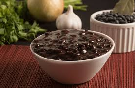

Red, black, white, and green are just a few of the appellations we have for our beans. I could go deeper into the varieties. There are variations within each of those shades and colors. But I’ll refrain from doing so as I may get lost in the process.
Haitian Sos Pwa
Ingredients
- 1½ cup uncooked beans
- 4½-5 cups water
- 2 garlic cloves
- ½ bell pepper
- ½ onion
- 1 piment bouc
- 1 thyme sprig
- salt & pepper to taste
- ti salé or lardon optional
- 1 tbsp butter optional
- Soak the beans in water overnight or for at least three (3) hours
- When ready to cook, strain the beans
- Transfer to a pressure cooker
- Cover with water
- Add the garlic cloves and cook for about 20 minutes. Your beans should be fork tender at this point
- Once the beans are cooked, separate them in half
- Purée the first half using either a mortar and pestle or a blender. Add some of the cooking water to make the process easier
- Strain the obtained purée and discard the skin
- Mix the purée with the second half of preserved beans and the remaining water
- Season to taste
- Transfer to a pot.
- Add the bell pepper, onion, piment bouc, thyme and lardon (optional)
- Let simmer on low until your bean sauce thickens. The longer you leave it, the thicker your sòs pwa
- Finish with the butter (optional) and serve in a bowl
- Laddle your sòs pwa over some rice, mayi moulen (polenta) or millet, and enjoy.